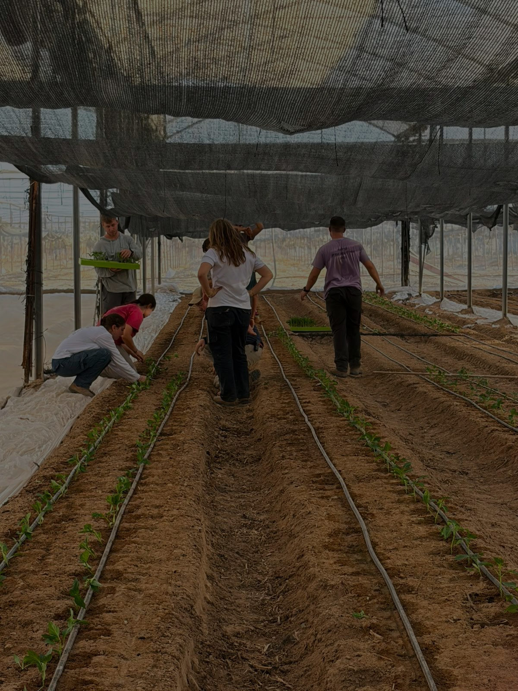
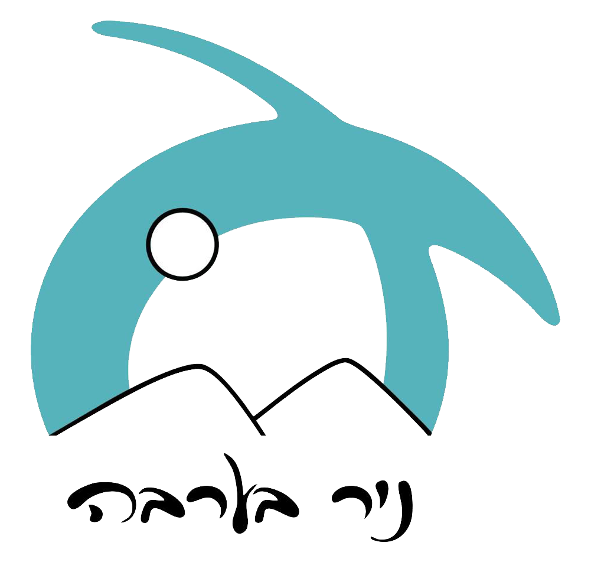
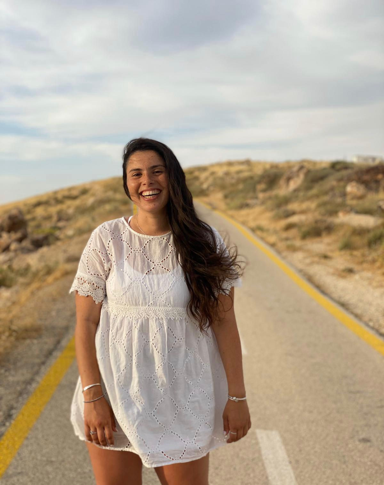

מכינת ״ניר בערבה״
מכינה קדם-צבאית חינוכית-טיפולית של עמותת רוח ערבה, בשיתוף ובפיקוח רשות חסות הנוער

אמונה באדםהזדמנות לצמוח
מכינת ניר בערבה היא מסגרת חינוכית-טיפולית ייחודית לצעירים בוגרי מסגרות רשות חסות הנוער. היא מעניקה להם הזדמנות לצמיחה אישית, לחיזוק תחושת המסוגלות והשייכות, ולהכנה לשירות צבאי משמעותי ולחיים עצמאיים.
המכינה פועלת לאורה של ניר אבוחצירה, בת הערבה, שהאמינה בכוחו של כל אדם להתמודד, לצמוח ולשנות מציאות. ניר הקדישה את חייה לנתינה, לעשייה ולמתן הזדמנות אמיתית לכל אדם, במבט, בחיוך ובמעשה.

מאמינים באדם
אנו מאמינים בכל צעיר וביכולתו לגלות את כוחותיו, למצוא את דרכו ולבנות לעצמו עתיד בעל משמעות. המכינה משלבת חיי קבוצה, ליווי חינוכי וטיפולי, עבודה חקלאית, למידה והתנדבות. הצוות המקצועי מעניק לכל מכיניסט מעטפת אישית שמאפשרת לו להתמודד עם אתגרים, לפתח עצמאות ואחריות ולבנות ביטחון ואמון בעצמו ובסביבתו. אדם צומח כשהוא מרגיש שייך, נחוץ ומשמעותי, ולכן אנו יוצרים לצעירים בית, קהילה ומרחב בטוח להתנסות, ללמוד ולהצליח.
הערבה והחקלאות כמרחב צמיחה
הערבה עבורנו היא הרבה יותר ממקום גיאוגרפי. היא מרחב חינוכי שמאפשר מפגש בלתי אמצעי עם האדם, האדמה והקהילה. בשדה אין קיצורי דרך: הצמיחה דורשת סבלנות, השקעה והתמדה. בשיתוף משק עפאים, חוות בין השיטין ואנשי הערבה, המכיניסטים משתלבים בעבודה חקלאית אמיתית, מתחברים לקהילה ולומדים איך עשייה משותפת יוצרת שייכות, מסוגלות ומשמעות.
לקראת שירות משמעותי וחיים עצמאיים
ההכנה לשירות הצבאי היא חלק מתהליך רחב של התפתחות אישית וחברתית. לאורך השנה המכיניסטים רוכשים כלים להתמודדות עם אתגרים, מפתחים כישורי חיים, עצמאות ומנהיגות, ומחזקים את האמונה ביכולתם להשפיע על עתידם. אנו שואפים שכל מכיניסט יתגייס לשירות משמעותי בצה"ל, או ישתלב בשירות משמעותי אחר למען המדינה.
בהשראת דמותה של ניר, אנו ממשיכים להאמין באדם, לראות את הטוב ולהפוך ערכים למעשים.